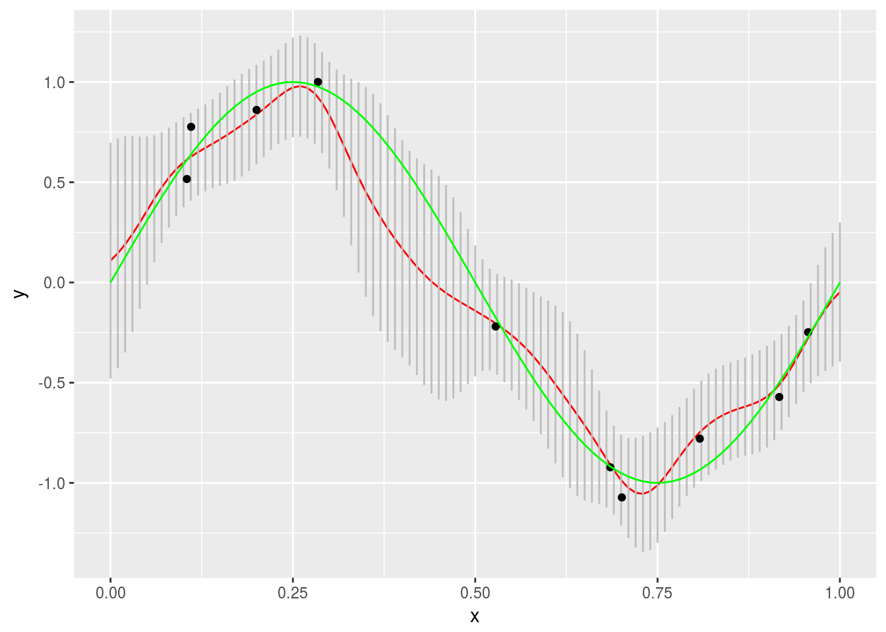

This project is an example of Bayesian linear regression.
First we generate a set of sample points from a noisy sine curve. These will be used to train the model.
# Generates a noisy sine curve.
N <- 10
sig2 <- 0.2
x <- as.matrix( runif(N, 0, 1) )
t <- sin(2*pi*x) + sig2 * runif(N, -1, 1)
sample_points <- data.frame(x = x, t = t)
sample_points %>% ggplot(aes(x = x, y = t)) + geom_point() + labs(x = "x", y = "y")Now we will use these points to construct our model.
# First we define the basis functions
# with M (the number of basis functions) and s (the Gaussian width parameter).
M <- 12
dx <- 1/(M-1)
mu <- 0:(M-1)
mu <- mu / (M-1)
s <- 0.05
# Next we define the kernel we'll use.
phi <- function(x,mu,s) {
exp(-(x-mu)^2/(2*s^2))
}
Phi <- matrix(nrow = N, ncol = M)
for (j in 1:M) Phi[,j] <- phi(x, mu[j],s)
# Now we'll compute the regularized least squares solution with penalty lambda.
lambda <- 0.1
w <- solve( t(Phi) %*% Phi + lambda*diag(M) ) %*% t(Phi) %*% t
# Next we compute the residual.
binv <- norm(t - Phi %*% w)^2/N
# Computes alpha from lambda and beta.
alpha <- lambda/binv
# Finally we compute the estimate at x (xs) and the variance of the uncertainty (sigN) at each x.
SN <- solve(alpha * diag(M) + t(Phi) %*% Phi / binv )
xs <- 0:100
xs <- xs / 100
tm <- matrix(nrow = 1, ncol = 101)
sigN <- matrix(nrow = 1, ncol = 101)
for (k in 1:length(xs) ) {
p <- t( phi(xs[k],t(mu),s) )
tm[k] <- t(w) %*% p
sigN[k] <- binv + t(p) %*% SN %*% p
}Finally we will plot our results. Note the gray error bars.
sample_points <- data.frame(x = x, t = t)
mod <- data.frame(xs = xs, tm = t( tm ), stdev = sqrt( t( sigN ) ) )
mod %>% ggplot(aes(x = xs, y = tm)) + geom_line(color = "red") +
geom_segment(aes(x = xs, xend = xs, y = tm + stdev, yend = tm - stdev), color = "gray") +
geom_point(data = sample_points, aes(x = x, y = t)) +
labs(x = "x", y = "y")